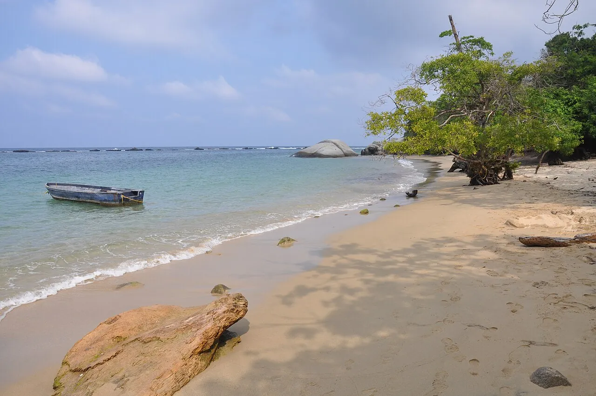

Parc Tayrona
Magdalena, Colombie · baignade, snorkeling

Plages sauvages entre jungle et rochers au pied de la Sierra Nevada. La baignade est possible à La Piscina et au Cabo San Juan.
- Lieu
- Magdalena, Colombie
- Niveau
- Débutant
- Activités
- baignade, snorkeling
- Type d'eau
- Mer / océan
- Coordonnées
- 11.31, -73.93 (position approximative du secteur)
Dangers à connaître
- Courants très dangereux sur de nombreuses plages.
- Parc fermé certains mois.
Le conseil d'Ocean Buddy
Baigne-toi uniquement sur les plages autorisées : ailleurs, les courants sont mortels.
Ouvrir dans Ocean Buddy Télécharger sur l'App Store
Source : Fiche Ocean Buddy · septembre 2026 · à vérifier localement.